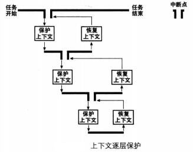
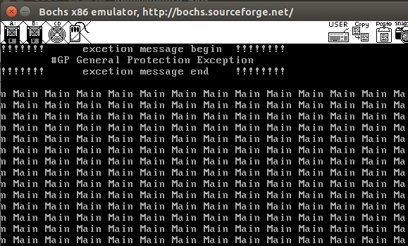

线程调度
- 中断
- 上下文保护
- 轮询法实现线程调度
线程和线程管理设计
数据结构主要是实现双向链表。
多线程维持了两个链表，一个是全部线程链表，一个是就绪线程链表。

/* 进程或线程的状态 */
enum task_status {
TASK_RUNNING,
TASK_READY,
TASK_BLOCKED,
TASK_WAITING,
TASK_HANGING,
TASK_DIED
};
就绪队列中的线程可以直接在处理器上运行，当线程得不到CPU或者被阻塞了就需要从就绪队列中移除。
线程被换下: 时间片到了；时间片未到，被阻塞了；
调度器按照线程队列先进先出的顺序，把就绪队列中的第一个线程作为下一个要运行的线程。
采用ticks（时间片）和priority（线程优先级）配合使用； 优先级越高，那么执行时间就越长，当一个线程的ticks减少为0时，就需要被换下了，然后被重新赋予priority,下次再被调用。
线程调度
调度器schedule就是根据线程运行状态将其从处理器上换上换下，所以主要任务是读写就绪对垒，增删里面的结点。
线程在处理器上的执行时间有ticks决定，而在初始一个线程的时候会赋予一个线程优先级prioriy，ticks也赋值成了priority,这样优先级越高，线程执行时间就越长。系统会有时钟中断，每一次中断ticks减少1，当ticks减少至0是，时钟中断处理程序就调用调度器schedule,把该线程换下，选择另一个线程上CPU
完成整个调度需要如下的3部分：
- 时钟中断处理函数
- 调度器shedule
- 任务切换函数switch_to
函数切换涉及到任务的上下文保护

中断发生时，当前运行的任务（线程或用户进程〉被打断，随后会去执行中断处理程序，不管当前任务在中断前的特权级是什么，执行中断处理程序时肯定都是 0 特权级。现在咱们已经达成共识，任务的代码包括用户代码＋内核代码，即使是部分用户代码，因此进入中断后所执行的一切内核代码也依然属于当前任务，只是由内核来提供这一部分而己。
上下文保护第一个部分：保存任务进入中断前的全部寄存器，目的是能让任务恢复到执中断前的状态。
上下文保护第二部分：保存API固定的寄存器，主要是esi,edi,ebp,esp这4个寄存器，目的是让任务恢复执行在任务切换发生时剩下尚未执行的内核代码，保证顺利走到退出中断的出口，利用第一部分保护的寄存器环境彻底恢复任务。
switch.S
[bits 32]
section .text
global switch_to
switch_to:
;栈中此处是返回地址
push esi
push edi
push ebx
push ebp
mov eax, [esp + 20] ; 得到栈中的参数cur, cur = [esp+20]
mov [eax], esp ; 保存栈顶指针esp. task_struct的self_kstack字段,
; self_kstack在task_struct中的偏移为0,
; 所以直接往thread开头处存4字节便可。
;------------------ 以上是备份当前线程的环境，下面是恢复下一个线程的环境 ----------------
mov eax, [esp + 24] ; 得到栈中的参数next, next = [esp+24]
mov esp, [eax] ; pcb的第一个成员是self_kstack成员,用来记录0级栈顶指针,
; 用来上cpu时恢复0级栈,0级栈中保存了进程或线程所有信息,包括3级栈指针
pop ebp
pop ebx
pop edi
pop esi
ret ; 返回到上面switch_to下面的那句注释的返回地址,
; 未由中断进入,第一次执行时会返回到kernel_thread

线程，PCB结构，函数
/* 进程或线程的pcb,程序控制块 */
struct task_struct {
uint32_t* self_kstack; // 各内核线程都用自己的内核栈
enum task_status status;
char name[16];
uint8_t priority;
uint8_t ticks; // 每次在处理器上执行的时间嘀嗒数
/* 此任务自上cpu运行后至今占用了多少cpu嘀嗒数,
* 也就是此任务执行了多久*/
uint32_t elapsed_ticks;
/* general_tag的作用是用于线程在一般的队列中的结点 */
struct list_elem general_tag;
/* all_list_tag的作用是用于线程队列thread_all_list中的结点 */
struct list_elem all_list_tag;
uint32_t* pgdir; // 进程自己页表的虚拟地址
uint32_t stack_magic; // 用这串数字做栈的边界标记,用于检测栈的溢出
};
- thread_stack
/*********** 线程栈thread_stack ***********
* 线程自己的栈,用于存储线程中待执行的函数
* 此结构在线程自己的内核栈中位置不固定,
* 用在switch_to时保存线程环境。
* 实际位置取决于实际运行情况。
******************************************/
struct thread_stack {
uint32_t ebp;
uint32_t ebx;
uint32_t edi;
uint32_t esi;
/* 线程第一次执行时,eip指向待调用的函数kernel_thread
其它时候,eip是指向switch_to的返回地址*/
void (*eip) (thread_func* func, void* func_arg);
/***** 以下仅供第一次被调度上cpu时使用 ****/
/* 参数unused_ret只为占位置充数为返回地址 */
void (*unused_retaddr);
thread_func* function; // 由Kernel_thread所调用的函数名
void* func_arg; // 由Kernel_thread所调用的函数所需的参数
};
有个主线程问题就是: mbr->loader->main，这是一直运行的主程序线程，其它线程都只是在创建过程中执行的。
/* 将kernel中的main函数完善为主线程 */
static void make_main_thread(void) {
/* 因为main线程早已运行,咱们在loader.S中进入内核时的mov esp,0xc009f000,
就是为其预留了tcb,地址为0xc009e000,因此不需要通过get_kernel_page另分配一页*/
main_thread = running_thread();
init_thread(main_thread, "main", 31);
/* main函数是当前线程,当前线程不在thread_ready_list中,
* 所以只将其加在thread_all_list中. */
ASSERT(!elem_find(&thread_all_list, &main_thread->all_list_tag));
list_append(&thread_all_list, &main_thread->all_list_tag);
}

/* 创建一优先级为prio的线程,线程名为name,线程所执行的函数是function(func_arg) */
struct task_struct* thread_start(char* name, int prio, thread_func function, void* func_arg) {
/* pcb都位于内核空间,包括用户进程的pcb也是在内核空间 */
struct task_struct* thread = get_kernel_pages(1);
init_thread(thread, name, prio);
thread_create(thread, function, func_arg);
/* 确保之前不在队列中 */
ASSERT(!elem_find(&thread_ready_list, &thread->general_tag));
/* 加入就绪线程队列 */
list_append(&thread_ready_list, &thread->general_tag);
/* 确保之前不在队列中 */
ASSERT(!elem_find(&thread_all_list, &thread->all_list_tag));
/* 加入全部线程队列 */
list_append(&thread_all_list, &thread->all_list_tag);
return thread;
}
/* 初始化线程环境 */
void thread_init(void) {
put_str("thread_init start\n");
list_init(&thread_ready_list);
list_init(&thread_all_list);
/* 将当前main函数创建为线程 */
make_main_thread();
put_str("thread_init done\n");
}
测试程序运行&验证截图
#include "print.h"
#include "init.h"
#include "thread.h"
#include "interrupt.h"
void k_thread_a(void*);
void k_thread_b(void*);
int main(void) {
put_str("I am kernel\n");
init_all();
thread_start("k_thread_a", 8, k_thread_a, "arguA ");
thread_start("k_thread_b", 31, k_thread_b, "arguB ");
intr_enable();// 打开中断,使时钟中断起作用
while(1) {
put_str("Main ");
};
return 0;
}
/* 在线程中运行的函数 */
void k_thread_a(void* arg) {
/* 用void*来通用表示参数,被调用的函数知道自己需要什么类型的参数,自己转换再用 */
char* para = arg;
while(1) {
put_str(para);
}
}
/* 在线程中运行的函数 */
void k_thread_b(void* arg) {
/* 用void*来通用表示参数,被调用的函数知道自己需要什么类型的参数,自己转换再用 */
char* para = arg;
while(1) {
put_str(para);
}
}


注意到：本例程序运行有GP异常，这是由于临界区代码的资源竞争（屏幕输出，几个线程竞争资源造成的，需要利用同步，互斥等去处理）